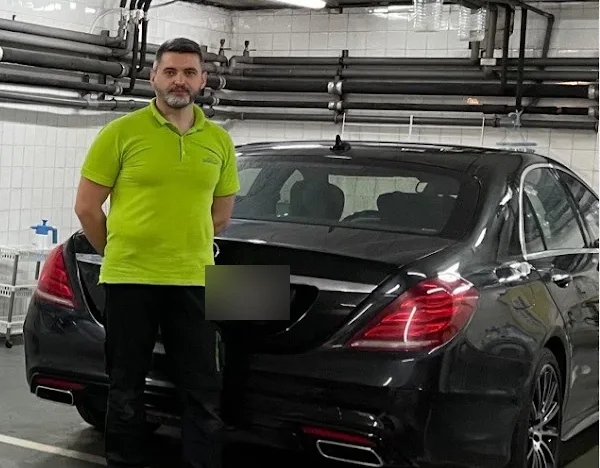

Autókozmetika a sziget alatt
Fedett mélygarázsban dolgozunk a Margitszigeten, így eső, szél és tűző nap sem számít.

Leparkol, és mehet a szigetre
Amíg Ön sétál, fut vagy dolgozik, mi a mélygarázsban rendbe tesszük az autót. Fedett helyen, időjárástól függetlenül, egész évben.
Amit gyakran kérdeznek
Hogyan tudok bejelentkezni?
Telefonon (+36 70 542 1025), e-mailben (gruszlan@gmail.com) vagy a Facebook-oldalunkon üzenetben.
Lehet felár a listaárhoz képest?
Igen, ha az autó állapota indokolja: ezt a felmérésnél, a munka előtt jelezzük. Extra nagy járműveknél (pick-up, 7 személyes, kisbusz) egységesen 5 000 Ft a felár.
Melyik méret az én autóm?
Kicsi például egy Polo vagy Fabia, közepes egy Octavia vagy Golf kombi, nagy egy SUV vagy egy nagy limuzin. Ha bizonytalan, telefonon megmondjuk.
Mennyi ideig tart?
Csomagtól és autótól függ: egy Standard mosás gyorsabb, egy Extra csomag több időt igényel. Bejelentkezéskor megmondjuk, mikorra lesz kész.